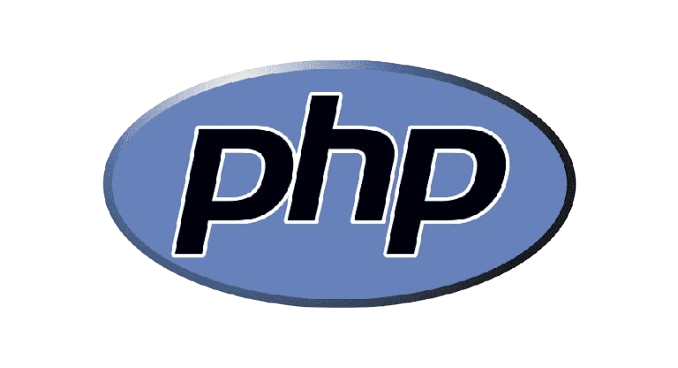
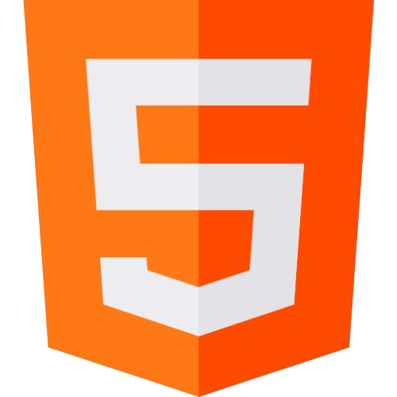
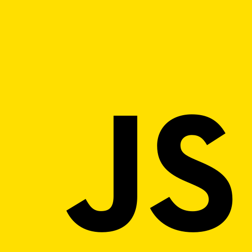
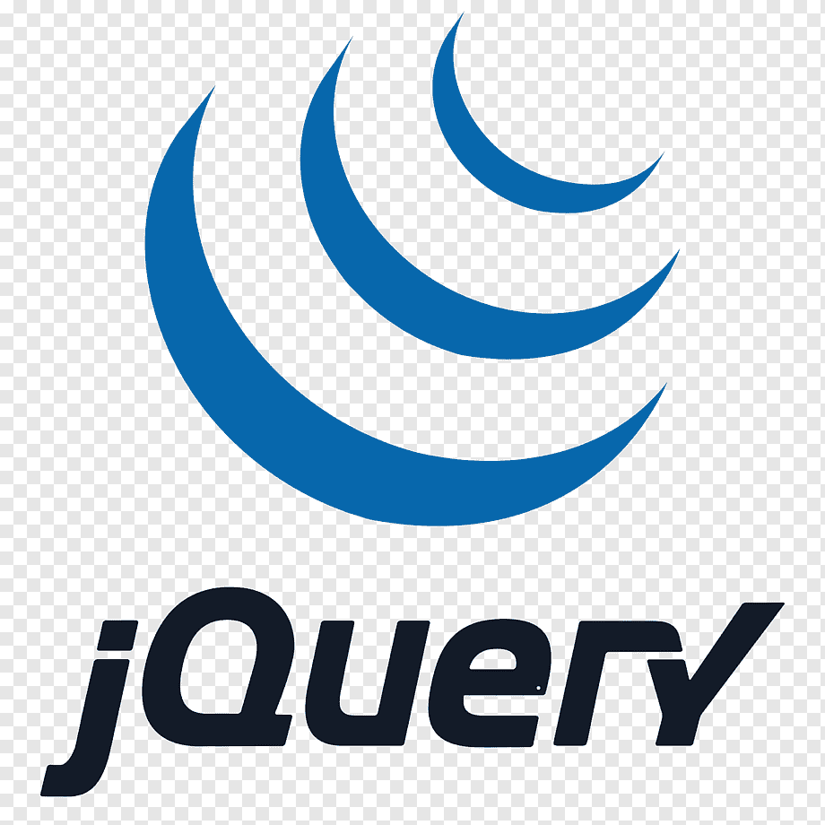
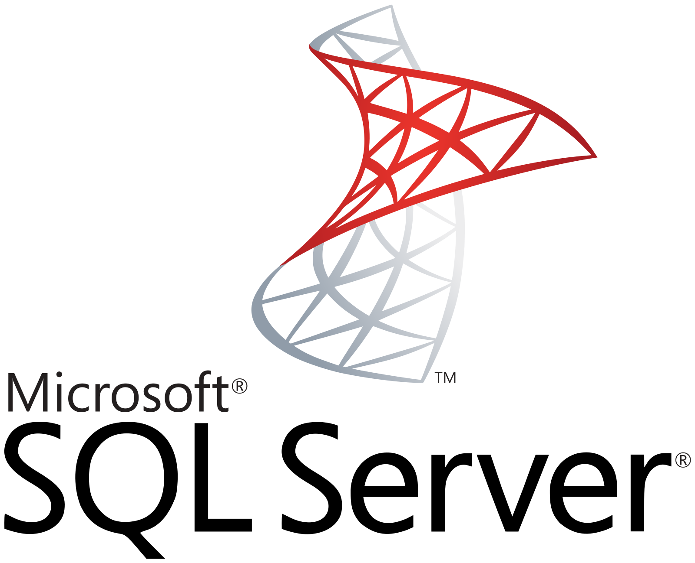

Carlos Alexandre Alves Cunha
- Desenvolvedor Full Stack
- Igaraçu do Tietê
- carlinhoscunhaig@gmail.com
- (14) 98165-6588
Habilidades
-

- 
- 
- 
- 
-

- 
Idiomas
-
Português
-
Inglês
Sobre Mim
Desenvolvedor Full-Stack com experiência em desenvolvimento web, atuando no back-end, front-end e na administração de bancos de dados relacionais. Possuo conhecimento sólido em C#, JavaScript e MS SQL Server, onde sempre priorizo a escrita de código limpo, eficiente e de fácil manutenção. Comprometido a melhorar as práticas de programação, aplico metodologias ágeis, princípios de Clean Code e práticas de desenvolvimento escalável para criar soluções robustas e de alto desempenho.
Além da tecnologia, sou apaixonado por musculação e atividades ao ar livre, como ciclismo e corrida. Acredito no aprendizado contínuo e na evolução constante, buscando sempre expandir meus conhecimentos e aprimorar minhas habilidades, tanto no desenvolvimento de software quanto na vida pessoal.
Experiências Profissionais
UPPER CONSULTORIA - Desenvolvedor Full-Stack
Out 2024 - Atual
Desenvolvedor full stack com experiência no desenvolvimento de aplicações web. No back-end, atuo na criação de Web APIs utilizando C# e SQL Server, garantindo performance e escalabilidade. No front-end, desenvolvo interfaces dinâmicas e interativas com JavaScript e jQuery, além de possuir um breve conhecimento em Angular através de cursos estudados.
FACULDADE GRAN TIETÊ - Estágio em infraestrutura e suporte técnico
Abril 2023 - Abril 2024
Realização e prestação de suporte técnico para usuários da rede facultativa e gestão das redes de internet internas, juntamente a manutenção dos computadores e notebooks.
Formações Acadêmicas
FACULDADE GRAN TIETÊ - Engenharia da Computação
Fev 2023 - Atualmente
A engenharia de computação é uma área que integra hardware e software, abrangendo o desenvolvimento de sistemas computacionais e a automação de processos. O curso aborda linguagens de programação como C, C++, Python e Java, além de eletrônica, sistemas digitais e redes de computadores. Também inclui uma base sólida em segurança da informação, banco de dados e inteligência artificial, com uma forte base matemática e física.
ETEC COMENDADOR JOÃO RAYS - Curso Técnico de Informática
Jul 2021 - Dez 2022
O curso técnico em informática é um curso voltado para a implementação e manutenção de sistemas computacionais, abrangendo tanto o desenvolvimento de software quanto a infraestrutura de TI. A formação inclui linguagens de programação como C#, Python e SQL, além de redes de computadores, sistemas operacionais e segurança da informação. Também aborda questões sobre execução de consultas em bancos de dados, hardware e suporte técnico, com uma base prática focada na resolução de problemas e na otimização de processos tecnológicos.